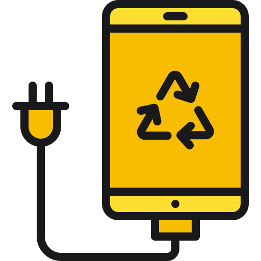

Guia para o descarte de lixo eletrônico
-

O lixo eletrônico contém materiais tóxicos que, se descartados incorretamente, contaminam o solo e a água.
O que é lixo eletrônico?
Lixo eletrônico (ou e-lixo) são aparelhos elétricos e eletrônicos que chegaram ao fim da vida útil. Eles possuem componentes recicláveis, mas também substâncias perigosas, como chumbo e mercúrio.
O que pode ser reciclado:
- Celulares, tablets e notebooks
- Cabos, carregadores e fontes de energia
- Televisores, monitores e CPUs
- Pilhas e baterias (em pontos específicos)
O que NÃO deve ser descartado no lixo comum:
- Dispositivos com componentes eletrônicos internos
- Baterias recarregáveis
- Equipamentos com líquidos ou metais pesados
Como descartar corretamente:
- Leve até pontos de coleta de lixo eletrônico em sua cidade
- Participe de campanhas de reciclagem promovidas por escolas e empresas
- Verifique se o fabricante possui programa de logística reversa